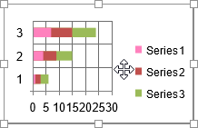
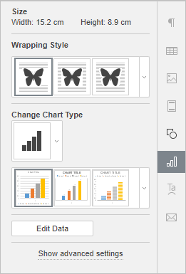
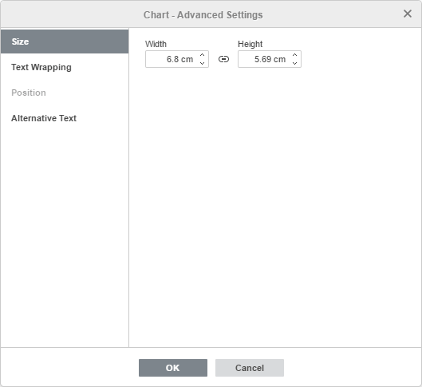
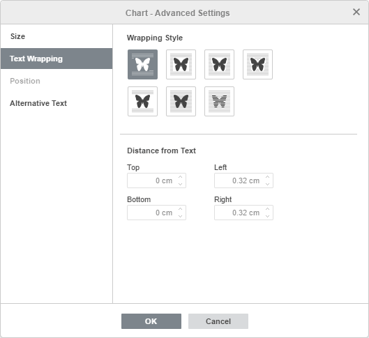
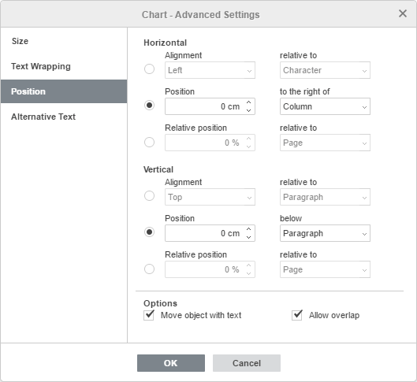
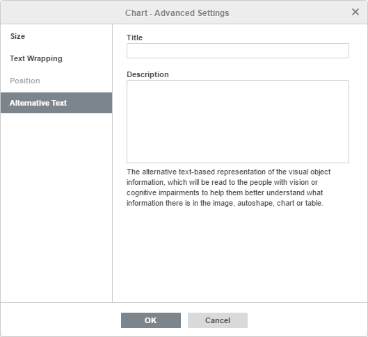

Umetanje grafikona
Umetanje grafikona
Da biste umetnuli grafikon u Document editor,
- Postavite kursor na mesto gde treba da se doda grafikon.
- Pređite na karticu Umetanje na gornjoj traci sa alatkama.
- Kliknite na ikonu Grafikon na gornjoj traci sa alatkama.
-
Izaberite potreban tip grafikona iz dostupnih:
Stubičasti grafikoni
- Grupisani stubičasti
- Složeni stubičasti
- 100% složeni stubičasti
- 3D grupisani stubičasti
- 3D složeni stubičasti
- 3D 100% složeni stubičasti
- 3D stubičasti
Linijski grafikoni
- Linijski
- Složeni linijski
- 100% složeni linijski
- Linijski sa markerima
- Složeni linijski sa markerima
- 100% složeni linijski sa markerima
- 3D linijski
Kružni grafikoni
- Kružni
- Prstenasti
- 3D kružni
Trakasti grafikoni
- Grupisani trakasti
- Složeni trakasti
- 100% složeni trakasti
- 3D grupisani trakasti
- 3D složeni trakasti
- 3D 100% složeni trakasti
Površinski grafikoni
- Površinski
- Složeni površinski
- 100% složeni površinski
Berlinski (Stock) grafikoni
XY (raspršeni) grafikoni
- Raspršeni
- Složeni trakasti
- Raspršeni sa glatkim linijama i markerima
- Raspršeni sa glatkim linijama
- Raspršeni sa pravim linijama i markerima
- Raspršeni sa pravim linijama
Radarski grafikoni
- Radarski
- Radarski sa markerima
- Popunjeni radarski
Kombinovani grafikoni
- Grupisani stubičasti – linijski
- Grupisani stubičasti – linijski na sekundarnoj osi
- Složeni površinski – grupisani stubičasti
- Prilagođena kombinacija
Napomena: ONLYOFFICE Uređivač dokumenata podržava sledeće tipove grafikona koji su kreirani u alatima trećih strana: Piramida, Stubičasti (piramidalni), Horizontalni/vertikalni cilindri, Horizontalni/vertikalni konusi. Možete otvoriti fajl koji sadrži takav grafikon i izmeniti ga pomoću dostupnih alata za uređivanje grafikona. Sledeći tipovi su podržani samo za otvaranje: Histogram, Vodopad, Levak.
-
Nakon toga, pojaviće se prozor Uređivač grafikona u kome možete uneti potrebne podatke u ćelije koristeći sledeće kontrole:
- i za kopiranje i lepljenje kopiranih podataka
- i za poništavanje i ponovno izvršavanje radnji
- za umetanje funkcije
- i za smanjenje i povećanje broja decimalnih mesta
 za promenu formata brojeva, tj. načina na koji se brojevi prikazuju u ćelijama
za promenu formata brojeva, tj. načina na koji se brojevi prikazuju u ćelijama za izbor drugog tipa grafikona.
za izbor drugog tipa grafikona.

-
Kliknite na dugme Izaberi podatke koje se nalazi u prozoru Uređivač grafikona. Otvoriće se prozor Podaci grafikona.
-
Koristite dijalog Podaci grafikona za upravljanje opcijama Opseg podataka grafikona, Stavke legende (serije), Oznake horizontalne (kategorijske) ose i Zameni red/kolonu.

-
Opseg podataka grafikona – izaberite podatke za grafikon.
-
Kliknite na ikonu desno od polja Opseg podataka grafikona da biste izabrali opseg podataka.

-
Kliknite na ikonu desno od polja Opseg podataka grafikona da biste izabrali opseg podataka.
-
Stavke legende (serije) – dodajte, izmenite ili uklonite stavke legende. Unesite ili izaberite naziv serije za legendu.
- U odeljku Stavke legende (serije) kliknite na dugme Dodaj.
-
U prozoru Izmena serije unesite novi naziv stavke legende ili kliknite na ikonu desno od polja Izaberi naziv.

-
Oznake horizontalne (kategorijske) ose – promenite tekst oznaka kategorija.
- U odeljku Oznake horizontalne (kategorijske) ose kliknite na Izmeni.
-
U polju Opseg oznaka ose unesite oznake koje želite da dodate ili kliknite na ikonu desno od tog polja da biste izabrali opseg podataka.

- Zameni red/kolonu – preraspodelite podatke u radnom listu ako grafikon nije prikazan na željeni način. Zamena redova i kolona omogućava prikaz podataka na drugoj osi.
-
Opseg podataka grafikona – izaberite podatke za grafikon.
- Kliknite na dugme OK da biste primenili izmene i zatvorili prozor.
-
Koristite dijalog Podaci grafikona za upravljanje opcijama Opseg podataka grafikona, Stavke legende (serije), Oznake horizontalne (kategorijske) ose i Zameni red/kolonu.
-
Kliknite na dugme Promeni tip grafikona u prozoru Uređivač grafikona da biste izabrali tip i stil grafikona. Izaberite grafikon iz dostupnih kategorija: Stubičasti, Linijski, Kružni, Trakasti, Površinski, Berzanski, XY (raspršeni), Radarski ili Kombinovani.

Kada izaberete Kombinovane grafikone, prozor Tip grafikona prikazuje serije grafikona i omogućava izbor tipova grafikona za kombinovanje, kao i izbor serija podataka koje će biti postavljene na sekundarnu osu.

-
Izmenite podešavanja grafikona klikom na dugme Uredi grafikon koje se nalazi u prozoru Uređivač grafikona. Otvoriće se prozor Grafikon – Napredna podešavanja.

Kartica Raspored omogućava promenu rasporeda elemenata grafikona.
-
Odredite položaj Naslova grafikona u odnosu na grafikon izborom odgovarajuće opcije iz padajuće liste:
- Nijedan – bez prikaza naslova grafikona,
- Preklapanje – naslov se preklapa i centrira u oblasti iscrtavanja,
- Bez preklapanja – naslov se prikazuje iznad oblasti iscrtavanja.
-
Odredite položaj Legende u odnosu na grafikon izborom odgovarajuće opcije iz padajuće liste:
- Nijedna – bez prikaza legende,
- Dole – legenda se prikazuje i poravnava pri dnu oblasti iscrtavanja,
- Gore – legenda se prikazuje i poravnava pri vrhu oblasti iscrtavanja,
- Desno – legenda se prikazuje i poravnava desno od oblasti iscrtavanja,
- Levo – legenda se prikazuje i poravnava levo od oblasti iscrtavanja,
- Levo – preklapanje – legenda se preklapa i centrira levo od oblasti iscrtavanja,
- Desno – preklapanje – legenda se preklapa i centrira desno od oblasti iscrtavanja.
-
Navedite parametre za Oznake podataka (tj. tekstualne oznake koje predstavljaju tačne vrednosti tačaka podataka):
-
Navedite poziciju Oznaka podataka u odnosu na tačke podataka, birajući potrebnu opciju iz padajuće liste. Dostupne opcije se razlikuju u zavisnosti od izabranog tipa grafikona.
- Za Stubičaste/Trakaste grafikone možete izabrati sledeće opcije: Nijedno, Centar, Unutrašnje dno, Unutrašnji vrh, Spoljašnji vrh.
- Za Linijske/XY (raspršene)/Berzanske grafikone možete izabrati sledeće opcije: Nijedno, Centar, Levo, Desno, Gore, Dole.
- Za Kružne grafikone možete izabrati sledeće opcije: Nijedno, Centar, Prilagodi širini, Unutrašnji vrh, Spoljašnji vrh.
- Za Površinske grafikone, kao i za 3D Stubičaste, Linijske, Trakaste, Radarske i Kombinovane grafikone, možete izabrati sledeće opcije: Nijedno, Centar.
- Izaberite podatke koje želite da uključite u oznake, označavanjem odgovarajućih polja: Naziv serije, Naziv kategorije, Vrednost,
- Unesite znak (zarez, tačka-zarez itd.) koji želite da koristite za razdvajanje više oznaka u polje Razdvajač oznaka podataka.
-
Navedite poziciju Oznaka podataka u odnosu na tačke podataka, birajući potrebnu opciju iz padajuće liste. Dostupne opcije se razlikuju u zavisnosti od izabranog tipa grafikona.
- Linije – koristi se za izbor stila linije za Linijske/XY (raspršene) grafikone. Možete izabrati jednu od sledećih opcija: Pravo da koristite prave linije između tačaka podataka, Glatko da koristite glatke krive između tačaka podataka ili Nijedno da se linije ne prikazuju.
-
Markeri – koristi se za određivanje da li markeri treba da se prikazuju (ako je polje označeno) ili ne (ako polje nije označeno) za Linijske/XY (raspršene) grafikone.
Napomena: opcije Linije i Markeri dostupne su samo za Linijske grafikone i XY (raspršene) grafikone.

Kartica Vertikalna osa omogućava promenu parametara vertikalne ose, poznate i kao osa vrednosti ili y-osa, koja prikazuje numeričke vrednosti. Imajte u vidu da će vertikalna osa biti kategorijska osa koja prikazuje tekstualne oznake za Trakaste grafikone, pa će u tom slučaju opcije na kartici Vertikalna osa odgovarati onima opisanim u sledećem odeljku. Za XY (raspršene) grafikone, obe ose su ose vrednosti.
Napomena: odeljci Podešavanja ose i Mrežne linije biće onemogućeni za Kružne grafikone, pošto grafikoni ovog tipa nemaju ose niti mrežne linije.
- Izaberite Sakrij da biste sakrili vertikalnu osu na grafikonu; ostavite neoznačeno da bi se vertikalna osa prikazivala.
-
Navedite orijentaciju Naslova birajući potrebnu opciju iz padajuće liste:
- Nijedno da se ne prikazuje naslov vertikalne ose
- Rotirano da se naslov prikazuje odozdo nagore, levo od vertikalne ose,
- Horizontalno da se naslov prikazuje horizontalno, levo od vertikalne ose.
- Minimalna vrednost – koristi se za određivanje najniže vrednosti prikazane na početku vertikalne ose. Opcija Automatski je podrazumevano izabrana; u tom slučaju minimalna vrednost se automatski izračunava u zavisnosti od izabranog opsega podataka. Možete izabrati opciju Fiksno iz padajuće liste i navesti drugu vrednost u polju desno.
- Maksimalna vrednost – koristi se za određivanje najviše vrednosti prikazane na kraju vertikalne ose. Opcija Automatski je podrazumevano izabrana; u tom slučaju maksimalna vrednost se automatski izračunava u zavisnosti od izabranog opsega podataka. Možete izabrati opciju Fiksno iz padajuće liste i navesti drugu vrednost u polju desno.
- Osa seče – koristi se za određivanje tačke na vertikalnoj osi gde horizontalna osa treba da je preseče. Opcija Automatski je podrazumevano izabrana; u tom slučaju vrednost preseka osa se automatski izračunava u zavisnosti od izabranog opsega podataka. Možete izabrati opciju Vrednost iz padajuće liste i navesti drugu vrednost u polju desno, ili postaviti tačku preseka osa na Minimalnu/Maksimalnu vrednost na vertikalnoj osi.
- Jedinice prikaza – koristi se za određivanje prikaza numeričkih vrednosti duž vertikalne ose. Ova opcija može biti korisna ako radite sa velikim brojevima i želite da se vrednosti na osi prikazuju kompaktnije i čitljivije (npr. 50 000 možete prikazati kao 50 koristeći jedinice prikaza Hiljade). Izaberite željene jedinice iz padajuće liste: Stotine, Hiljade, 10 000, 100 000, Milioni, 10 000 000, 100 000 000, Milijarde, Bilioni, ili izaberite opciju Nijedno da biste se vratili na podrazumevane jedinice.
- Vrednosti obrnutim redosledom – koristi se za prikaz vrednosti u suprotnom smeru. Kada polje nije označeno, najniža vrednost je na dnu, a najviša na vrhu ose. Kada je polje označeno, vrednosti su poređane od vrha ka dnu.
- Logaritamska skala – koristi se za uključivanje logaritamskog skaliranja sa Osnovom koju određuje korisnik.
-
Odeljak Opcije oznaka (tick) omogućava podešavanje izgleda oznaka podeoka na vertikalnoj skali. Glavne oznake su veće podele skale, koje mogu imati oznake sa numeričkim vrednostima. Sporedne oznake su podele između glavnih oznaka i nemaju oznake. Oznake podeoka takođe određuju gde se mogu prikazati mrežne linije ako je odgovarajuća opcija podešena na kartici Raspored. Padajuće liste Glavni/sporedni tip sadrže sledeće opcije položaja:
- Nijedno da se ne prikazuju glavne/sporedne oznake podeoka,
- Preko da se glavne/sporedne oznake prikazuju sa obe strane ose,
- Unutra da se glavne/sporedne oznake prikazuju unutar ose,
- Spolja da se glavne/sporedne oznake prikazuju spolja od ose.
-
Odeljak Opcije oznaka omogućava podešavanje izgleda oznaka glavnih podeoka, koje prikazuju vrednosti. Da biste odredili Poziciju oznaka u odnosu na vertikalnu osu, izaberite potrebnu opciju iz padajuće liste:
- Nijedno da se ne prikazuju oznake podeoka,
- Nisko da se oznake podeoka prikazuju levo od oblasti iscrtavanja,
- Visoko da se oznake podeoka prikazuju desno od oblasti iscrtavanja,
- Pored ose da se oznake podeoka prikazuju pored ose.
-
Da biste odredili Format oznaka, kliknite na dugme Format oznaka i izaberite kategoriju prema potrebi.
Dostupne kategorije formata oznaka:
- Opšte
- Broj
- Naučno
- Računovodstveno
- Valuta
- Datum
- Vreme
- Procenat
- Razlomak
- Tekst
- Prilagođeno
Opcije formata oznaka se razlikuju u zavisnosti od izabrane kategorije. Za više informacija o promeni formata brojeva, idite na ovu stranicu.
- Označite Povezano sa izvorom da biste zadržali formatiranje brojeva iz izvora podataka u grafikonu.

Napomena: Sekundarne ose su podržane samo u Kombinovanim grafikonima.
Sekundarne ose su korisne u kombinovanim grafikonima kada se serije podataka znatno razlikuju ili se koriste mešoviti tipovi podataka za iscrtavanje grafikona. Sekundarne ose olakšavaju čitanje i razumevanje kombinovanog grafikona.
Kartica Sekundarna vertikalna/horizontalna osa se pojavljuje kada izaberete odgovarajuću seriju podataka za kombinovani grafikon. Sva podešavanja i opcije na kartici Sekundarna vertikalna/horizontalna osa ista su kao podešavanja na vertikalnoj/horizontalnoj osi. Za detaljan opis opcija Vertikalne/horizontalne ose, pogledajte opis iznad/ispod.

Kartica Horizontalna osa omogućava promenu parametara horizontalne ose, poznate i kao osa kategorija ili x-osa, koja prikazuje tekstualne oznake. Imajte u vidu da će horizontalna osa biti osa vrednosti koja prikazuje numeričke vrednosti za Trakaste grafikone, pa će u tom slučaju opcije na kartici Horizontalna osa odgovarati onima opisanim u prethodnom odeljku. Za XY (raspršene) grafikone, obe ose su ose vrednosti.
- Izaberite Sakrij da biste sakrili horizontalnu osu na grafikonu; ostavite neoznačeno da bi se horizontalna osa prikazivala.
-
Navedite orijentaciju Naslova birajući potrebnu opciju iz padajuće liste:
- Nijedno da se ne prikazuje naslov horizontalne ose,
- Bez preklapanja da se naslov prikaže ispod horizontalne ose,
- Mrežne linije se koriste za određivanje koje Horizontalne mrežne linije će se prikazivati, birajući potrebnu opciju iz padajuće liste: Nijedno, Glavne, Sporedne ili Glavne i sporedne.
- Osa seče – koristi se za određivanje tačke na horizontalnoj osi gde vertikalna osa treba da je preseče. Opcija Automatski je podrazumevano izabrana; u tom slučaju vrednost preseka osa se automatski izračunava u zavisnosti od izabranog opsega podataka. Možete izabrati opciju Vrednost iz padajuće liste i navesti drugu vrednost u polju desno, ili postaviti tačku preseka osa na Minimalnu/maksimalnu vrednost (što odgovara prvoj i poslednjoj kategoriji) na horizontalnoj osi.
- Položaj ose – koristi se za određivanje gde treba postaviti tekstualne oznake ose: Na oznakama podeoka ili Između oznaka podeoka.
- Vrednosti obrnutim redosledom – koristi se za prikaz kategorija u suprotnom smeru. Kada polje nije označeno, kategorije se prikazuju s leva na desno. Kada je polje označeno, kategorije su poređane s desna na levo.
-
Odeljak Opcije oznaka (tick) omogućava podešavanje izgleda oznaka podeoka na horizontalnoj skali. Glavne oznake podeoka su veće podele koje mogu imati oznake sa vrednostima kategorija. Sporedne oznake podeoka su manje podele između glavnih oznaka i nemaju oznake. Oznake podeoka takođe određuju gde se mogu prikazati mrežne linije ako je odgovarajuća opcija podešena na kartici Raspored. Možete podesiti sledeće parametre oznaka podeoka:
- Glavni/sporedni tip – koristi se za određivanje sledećih opcija položaja: Nijedno da se ne prikazuju glavne/sporedne oznake podeoka, Preko da se glavne/sporedne oznake prikažu sa obe strane ose, Unutra da se glavne/sporedne oznake prikažu unutar ose, Spolja da se glavne/sporedne oznake prikažu spolja od ose.
- Interval između oznaka – koristi se za određivanje koliko kategorija treba da bude prikazano između dve susedne oznake podeoka.
-
Odeljak Opcije oznaka omogućava podešavanje izgleda oznaka koje prikazuju kategorije.
- Pozicija oznake – koristi se za određivanje gde treba postaviti oznake u odnosu na horizontalnu osu. Izaberite potrebnu opciju iz padajuće liste: Nijedno da se ne prikazuju oznake kategorija, Nisko da se oznake kategorija prikažu na dnu oblasti iscrtavanja, Visoko da se oznake kategorija prikažu na vrhu oblasti iscrtavanja, Pored ose da se oznake kategorija prikažu pored ose.
- Udaljenost oznake ose – koristi se za određivanje koliko blizu ose treba postaviti oznake. Potrebnu vrednost možete navesti u polju za unos. Što je veća vrednost, veća je udaljenost između ose i oznaka.
- Interval između oznaka – koristi se za određivanje koliko često se oznake prikazuju. Opcija Automatski je podrazumevano izabrana; u tom slučaju oznake se prikazuju za svaku kategoriju. Možete izabrati opciju Ručno iz padajuće liste i navesti potrebnu vrednost u polju desno. Na primer, unesite 2 da bi se oznake prikazivale za svaku drugu kategoriju itd.
-
Da biste odredili Format oznaka, kliknite na dugme Format oznaka i izaberite odgovarajuću kategoriju.
Dostupne kategorije formata oznaka:
- Opšte
- Broj
- Naučno
- Računovodstveno
- Valuta
- Datum
- Vreme
- Procenat
- Razlomak
- Tekst
- Prilagođeno
Opcije formata oznaka se razlikuju u zavisnosti od izabrane kategorije. Za više informacija o promeni formata brojeva, idite na ovu stranicu.
- Označite Povezano sa izvorom da biste zadržali formatiranje brojeva iz izvora podataka u grafikonu.

Kartica Priljubljivanje uz ćelije sadrži sledeće parametre:
- Pomeri i promeni veličinu sa ćelijama – ova opcija omogućava da se grafikon “priljubi” uz ćeliju iza njega. Ako se ćelija pomeri (npr. ako ubacite ili obrišete neke redove/kolone), grafikon će se pomeriti zajedno sa ćelijom. Ako povećate ili smanjite širinu ili visinu ćelije, grafikon će takođe promeniti svoju veličinu.
- Pomeri, ali ne menjaj veličinu sa ćelijama – ova opcija omogućava da se grafikon “priljubi” uz ćeliju iza njega, sprečavajući promenu veličine grafikona. Ako se ćelija pomeri, grafikon će se pomeriti zajedno sa ćelijom, ali ako promenite veličinu ćelije, dimenzije grafikona ostaju nepromenjene.
- Ne pomeraj niti menjaj veličinu sa ćelijama – ova opcija omogućava da sprečite pomeranje ili promenu veličine grafikona ako je promenjen položaj ili veličina ćelije.

Kartica Alternativni tekst omogućava navođenje Naslova i Opisa koji će se čitati osobama sa oštećenjem vida ili kognitivnim poteškoćama, kako bi im pomogao da bolje razumeju koje informacije grafikon sadrži.
-
Odredite položaj Naslova grafikona u odnosu na grafikon izborom odgovarajuće opcije iz padajuće liste:
Premestite i promenite veličinu grafikona

Kada se grafikon doda, možete promeniti njegovu veličinu i položaj. Da biste promenili veličinu grafikona, prevucite male kvadratiće koji se nalaze na njegovim ivicama. Da biste zadržali originalne proporcije izabranog grafikona prilikom promene veličine, držite pritisnut taster Shift i prevucite jednu od uglovnih ikonica.Da biste promenili položaj grafikona, koristite ikonicu koja se pojavljuje nakon što pređete mišem preko grafikona. Prevucite grafikon na željenu poziciju bez puštanja tastera miša. Kada pomerate grafikon, prikazuju se pomoćne linije koje vam pomažu da precizno postavite objekat na stranicu (ako je izabran stil prelamanja drugačiji od umetnutog u liniji).
Napomena: lista prečica na tastaturi koje se mogu koristiti pri radu sa objektima dostupna je ovde.
Uređivanje elemenata grafikona
Da biste uredili Naslov grafikona, izaberite podrazumevani tekst mišem i unesite željeni tekst.
Da biste promenili formatiranje fonta unutar tekstualnih elemenata, kao što su naslov grafikona, naslovi osa, stavke legende, oznake podataka itd., izaberite odgovarajući tekstualni element klikom levim tasterom miša. Zatim koristite odgovarajuće ikonice na kartici Početna na gornjoj traci sa alatkama da biste promenili tip, veličinu, boju fonta ili njegov stil dekoracije.
Kada je grafikon izabran, na desnoj strani je dostupna i ikonica Podešavanja oblika , pošto se oblik koristi kao pozadina grafikona. Možete kliknuti na ovu ikonicu da biste otvorili karticu Podešavanja oblika na desnoj bočnoj traci i prilagodili Ispunu i Liniju oblika. Imajte u vidu da nije moguće promeniti tip oblika.
Koristeći karticu Podešavanja oblika na desnom panelu, možete prilagoditi i samu oblast grafikona i menjati elemente grafikona, kao što su oblast iscrtavanja, serije podataka, naslov grafikona, legenda itd., kao i primeniti različite tipove ispune na njih. Izaberite element grafikona klikom levim tasterom miša i odaberite željeni tip ispune: puna boja, gradijent, tekstura ili slika, šablon. Navedite parametre ispune i po potrebi podesite nivo Neprozirnosti. Kada izaberete vertikalnu ili horizontalnu osu ili mrežne linije, podešavanja ivice su dostupna samo na kartici Podešavanja oblika: boja, širina, tip i neprozirnost. Za više detalja o radu sa bojama oblika, ispunama i linijama, možete se obratiti ovoj stranici.
Napomena: opcija Prikaži senku je takođe dostupna na kartici Podešavanja oblika, ali je onemogućena za elemente grafikona.
Ako je potrebno promeniti veličinu elemenata grafikona, kliknite levim tasterom miša da biste izabrali željeni element i prevucite jedan od 8 belih kvadratića koji se nalaze duž ivice elementa.
Da biste promenili položaj elementa, kliknite levim tasterom miša na njega, uverite se da se kursor promenio u , držite levi taster miša i prevucite element na željenu poziciju.
Da biste obrisali element grafikona, izaberite ga klikom levim tasterom miša i pritisnite taster Delete na tastaturi.
Takođe možete rotirati 3D grafikone pomoću miša. Kliknite levim tasterom miša unutar oblasti iscrtavanja i držite taster pritisnut. Prevucite kursor bez puštanja tastera miša da biste promenili orijentaciju 3D grafikona.

Podešavanje postavki grafikona

Neke postavke grafikona mogu se izmeniti pomoću kartice Podešavanja grafikona na desnoj bočnoj traci. Da biste je aktivirali, kliknite na grafikon i izaberite ikonicu Podešavanja grafikona sa desne strane. Ovde možete promeniti sledeće osobine:
- Veličina se koristi za prikaz Širine i Visine trenutnog grafikona.
- Stil prelamanja se koristi za izbor stila prelamanja teksta između dostupnih opcija – u liniji, kvadratno, tesno, kroz, gore i dole, ispred, iza (za više informacija pogledajte opis naprednih podešavanja ispod).
-
Promeni tip grafikona se koristi za promenu izabranog tipa i/ili stila grafikona.
Da biste izabrali potreban Stil grafikona, koristite drugi padajući meni u odeljku Promeni tip grafikona.
-
Uredi podatke se koristi za otvaranje prozora „Uređivač grafikona“.
Napomena: da biste brzo otvorili prozor „Uređivač grafikona“, možete i dvaput kliknuti na grafikon u dokumentu.
Neke od ovih opcija možete pronaći i u kontekstnom meniju (desni klik). Opcije menija su:
- Iseci, Kopiraj, Nalepi – standardne opcije koje se koriste za sečenje ili kopiranje izabranog teksta/objekta i lepljenje prethodno isečenog/kopiranog teksta ili objekta na trenutnu poziciju kursora.
- Rasporedi se koristi za dovođenje izabranog grafikona u prvi plan, slanje u pozadinu, pomeranje unapred ili unazad, kao i grupisanje ili razgrupisavanje grafikona radi rada sa više njih istovremeno. Za više informacija o raspoređivanju objekata, pogledajte ovu stranicu.
- Poravnaj se koristi za poravnanje grafikona levo, centrirano, desno, gore, po sredini ili dole. Za više informacija o poravnanju objekata, možete se obratiti ovoj stranici.
- Stil prelamanja se koristi za izbor stila prelamanja teksta između dostupnih opcija – u liniji, kvadratno, tesno, kroz, gore i dole, ispred, iza. Opcija Uredi granicu prelamanja nije dostupna za grafikone.
- Uredi podatke se koristi za otvaranje prozora „Uređivač grafikona“.
- Napredna podešavanja grafikona se koristi za otvaranje prozora „Grafikon – napredna podešavanja“.
Dodatno, za 3D grafikone su dostupna i podešavanja 3D rotacije:

- X rotacija – postavite potrebnu vrednost rotacije X ose pomoću tastature ili pomoću strelica Levo i Desno sa desne strane.
- Y rotacija – postavite potrebnu vrednost rotacije Y ose pomoću tastature ili pomoću strelica Gore i Dole sa desne strane.
- Perspektiva – postavite potrebnu vrednost rotacije dubine pomoću tastature ili pomoću strelica Suzi vidno polje i Proširi vidno polje sa desne strane.
- Osa pod pravim uglom – koristi se za postavljanje prikaza ose pod pravim uglom.
- Automatsko skaliranje – označite ovo polje da biste automatski skalirali vrednosti dubine i visine grafikona ili ga poništite da biste ručno postavili vrednosti dubine i visine.
- Dubina (% osnove) – postavite potrebnu vrednost dubine pomoću tastature ili pomoću strelica.
- Visina (% osnove) – postavite potrebnu vrednost visine pomoću tastature ili pomoću strelica.
- Podrazumevana rotacija – postavlja 3D parametre na podrazumevane vrednosti.
Imajte u vidu da nije moguće uređivati svaki element grafikona pojedinačno; podešavanja će biti primenjena na grafikon u celini.
Da biste promenili napredna podešavanja grafikona, kliknite desnim tasterom miša na željeni grafikon i izaberite Napredna podešavanja grafikona iz kontekstnog menija ili jednostavno kliknite na vezu Prikaži napredna podešavanja na desnoj bočnoj traci. Otvoriće se prozor sa osobinama grafikona:

Kartica Veličina sadrži sledeće parametre:
- Širina i Visina – koristite ove opcije za promenu širine i/ili visine grafikona. Ako je dugme Konstantne proporcije aktivirano (u tom slučaju izgleda ovako ), širina i visina će se menjati zajedno, uz očuvanje originalnog odnosa stranica grafikona.

Kartica Prelamanje teksta sadrži sledeće parametre:
-
Stil prelamanja – koristite ovu opciju da biste promenili način na koji je grafikon pozicioniran u odnosu na tekst: on može biti deo teksta (ako izaberete stil u liniji) ili ga tekst može zaobilaziti sa svih strana (ako izaberete neki od drugih stilova).
-
U liniji – grafikon se smatra delom teksta, poput znaka, pa se zajedno sa tekstom pomera. U ovom slučaju opcije pozicioniranja nisu dostupne.
Ako je izabran neki od sledećih stilova, grafikon se može pomerati nezavisno od teksta i precizno pozicionirati na stranici:
- Kvadratno – tekst obavija pravougaoni okvir koji ograničava grafikon.
- Tesno – tekst obavija stvarne ivice grafikona.
- Kroz – tekst obavija ivice grafikona i popunjava prazan prostor unutar grafikona.
- Gore i dole – tekst se nalazi samo iznad i ispod grafikona.
- Ispred – grafikon prekriva tekst.
- Iza – tekst prekriva grafikon.
-
U liniji – grafikon se smatra delom teksta, poput znaka, pa se zajedno sa tekstom pomera. U ovom slučaju opcije pozicioniranja nisu dostupne.
Ako izaberete stil kvadratno, tesno, kroz ili gore i dole, moći ćete da podesite dodatne parametre – udaljenost od teksta sa svih strana (gore, dole, levo, desno).

Kartica Položaj je dostupna samo ako izabrani stil prelamanja nije u liniji. Ova kartica sadrži sledeće parametre koji se razlikuju u zavisnosti od izabranog stila prelamanja:
-
Odeljak Horizontalno omogućava izbor jednog od sledeća tri tipa pozicioniranja grafikona:
- Poravnanje (levo, centar, desno) u odnosu na znak, kolonu, levu marginu, marginu, stranicu ili desnu marginu,
- Apsolutni Položaj izražen u apsolutnim jedinicama, npr. centimetrima/tačkama/inčima (u zavisnosti od opcije navedene na kartici Datoteka -> Napredna podešavanja...) desno od znaka, kolone, leve margine, margine, stranice ili desne margine,
- Relativni položaj izražen u procentima u odnosu na levu marginu, marginu, stranicu ili desnu marginu.
-
Odeljak Vertikalno omogućava izbor jednog od sledeća tri tipa pozicioniranja grafikona:
- Poravnanje (gore, centar, dole) u odnosu na liniju, marginu, donju marginu, pasus, stranicu ili gornju marginu,
- Apsolutni Položaj izražen u apsolutnim jedinicama, npr. centimetrima/tačkama/inčima (u zavisnosti od opcije navedene na kartici Datoteka -> Napredna podešavanja...) ispod linije, margine, donje margine, pasusa, stranice ili gornje margine,
- Relativni položaj izražen u procentima u odnosu na marginu, donju marginu, stranicu ili gornju marginu.
- Pomeri objekat zajedno sa tekstom obezbeđuje da se grafikon pomera zajedno sa tekstom za koji je vezan.
- Dozvoli preklapanje omogućava da se dva grafikona preklapaju ako ih prevučete blizu jedan drugog na stranici.

Kartica Alternativni tekst omogućava navođenje Naslova i Opisa koji će se čitati osobama sa oštećenjem vida ili kognitivnim poteškoćama, kako bi im pomogao da bolje razumeju koje informacije grafikon sadrži.